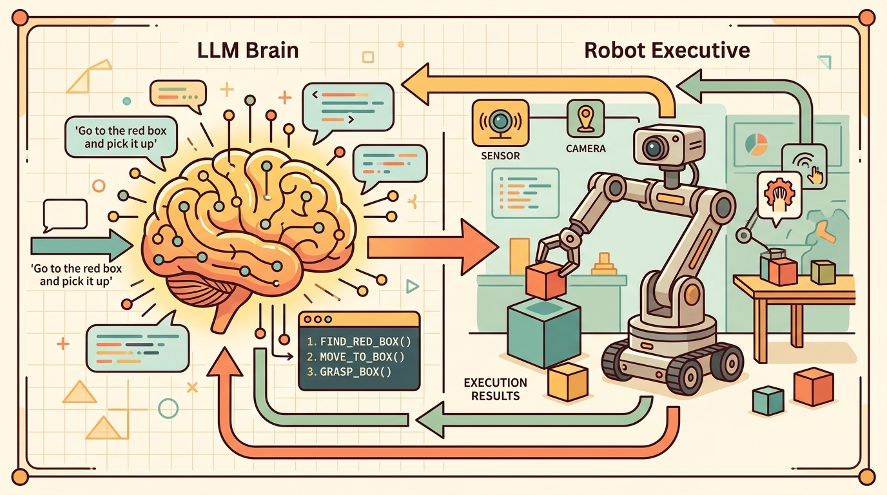

"A typed API call is a plan that committed. A natural-language description of what a robot should do is a plan that deferred. Verification is what decides which one you have."
A Careful Control Loop

This section assumes familiarity with LLM chain-of-thought planning from section 33.1 and the SayCan affordance-grounding approach from section 33.2. The typed-API and verifier patterns introduced here are applied directly to manipulation skills in section 42.6 and extended to human-in-the-loop escalation in section 50.5. State tracking under replanning is developed further in section 33.7.
Read the figure as an action-API audit. Tool use is safe only when every callable action has typed inputs, preconditions, postconditions, timeout behavior, and a replanning path after failure.
Build And Evaluation Checklist
Depth and self-containment. This section must explain how an LLM chooses among tools, how typed action APIs constrain execution, and how verifier failures trigger replanning rather than silent drift.
Production and evaluation contract. The minimum artifact records the selected tool, its arguments, the verifier output, the replanning trigger, and the new plan. Without these fields, tool-use claims are impossible to audit.
For Tool use, action APIs, plan verification, replanning, name the language interface, grounded world state, executable action contract, and evidence artifact before trusting any claimed improvement.
For Tool use, action APIs, plan verification, replanning, write one evidence row recording instruction, world-state estimate, chosen action, verifier result, and failure label. Then identify which field would change first under command misunderstanding.
A warehouse robot receives the instruction "move the red bin to shelf C4." The LLM planner selects gripper.pick(object="red_bin"), but the verifier returns a weight-limit fault. Does the system halt, hallucinate success, or synthesize a two-step alternative in real time? That single decision separates a deployable controller from a demo that works only when nothing goes wrong. As robots enter environments with unpredictable loads, blocked paths, and partial sensor failure, the ability to verify every action against typed postconditions and replan on evidence is now the central engineering challenge in embodied AI. Here you will instrument a tool-use loop, define a minimal verifier contract, and build a replanning trigger that responds to failure evidence rather than silence.
This section connects LLM planning to the practical machinery of action APIs, typed arguments, postconditions, and replanning under failure.
The practical question is not only which tool to call, but what evidence should force the planner to abandon the current plan and synthesize a new one.
A tool call without a verifier is just a wish. Replanning starts when the verifier says the wish did not come true.
Theory
Let $u_i$ be typed tools and let $v_i(s_t, a_t)$ be a verifier for the postcondition of tool $u_i$. An embodied planner executes a loop $$u_t, \theta_t = \phi_\text{LLM}(h_t), \qquad y_t = u_t(\theta_t), \qquad b_t = v_t(y_t, s_{t+1}),$$ then continues only if the boolean or scalar verifier signal $b_t$ passes a threshold.
This structure matters because embodied actions are long running and failure prone. A free-text chain of thought may say 'now place the mug on the tray,' but the actual robot needs a typed `place(target='tray')` call, a completion signal, and a postcondition check such as `object_on_tray=True` before the next reasoning step can be trusted.
When an LLM emits a free-text action description, the downstream executor must parse ambiguous natural language before anything can be verified. A typed schema such as {"tool": "place", "target": "tray", "max_force_N": 5} eliminates that parsing step: the verifier receives machine-readable arguments, can check preconditions before execution, and can produce a structured failure report naming the exact violated field. This is why systems like Google's SayCan and MIT's LAMPS enforce typed action vocabularies even when the planner is a language model: the schema is the contract between language and physics, and contracts need fixed terms to be enforceable.
The clean mental model is planner, tool, verifier, replan. Every transition should be explicit and typed. If the verifier fails, the planner does not merely continue with reduced confidence; it reasons over a new state that includes the failure evidence.
Algorithm: Typed Tool-Use Loop with Postcondition Verification and Replanning
Input: goal $g$, typed tool set $\mathcal{U} = \{u_1, \dots, u_k\}$, verifier functions $v_i(y, s)$, LLM planner $\phi_\theta$, maximum replan budget $R$, history buffer $h$
Output: terminal world state $s_T$ or escalation signal if recovery budget is exhausted
- Initialize history $h_0 \leftarrow [g]$, step $t \leftarrow 0$, replan count $r \leftarrow 0$.
- Query planner: $(u_t, \theta_t) \leftarrow \phi_\theta(h_t)$, where $u_t \in \mathcal{U}$ is the selected tool and $\theta_t$ is its typed argument schema.
- Validate $\theta_t$ against the JSON schema of $u_t$; if validation fails, append the schema error to $h_t$ and return to step 2 without executing.
Schema validation before execution matters because robot actuators do not return parse errors: a torque command with a missing unit field may be interpreted as zero or as the maximum value, either of which can damage hardware or injure a nearby human. Catching a malformed argument at the schema layer prevents an irreversible physical consequence from a recoverable linguistic error.
Mechanically, each tool exposes a JSON schema declaring required fields, types, and value ranges. When the LLM emits a tool call, the controller runs a schema validator such as Python's jsonschema.validate against that declaration before any execution request leaves the planner. A field with the wrong type, a missing required key, or a value outside the declared range raises a structured error that is appended to the history buffer, prompting the planner to emit a corrected call. The robot never moves until the argument record passes.
- Execute: $y_t \leftarrow u_t(\theta_t)$ and observe the new world state $s_{t+1}$ from sensors or environment feedback.
- Verify postcondition: $b_t \leftarrow v_t(y_t, s_{t+1})$, returning a structured record $\text{FR}_t = (\text{tool}, \theta_t, \text{violated\_postcondition}, s_{t+1}, \tau_t)$ where $\tau_t$ is the timestamp.
- If $b_t = \text{pass}$: append $(u_t, \theta_t, y_t, s_{t+1})$ to $h_{t+1}$, increment $t$, and go to step 7.
- If $b_t = \text{fail}$ and $r < R$: append $\text{FR}_t$ to history, set $h_{t+1} \leftarrow h_t \cup \{\text{FR}_t\}$, increment $r$, and return to step 2 to replan from the updated state.
- If $b_t = \text{fail}$ and $r \geq R$: emit escalation signal with the full failure trace $\{\text{FR}_1, \dots, \text{FR}_r\}$ and terminate.
- If goal $g$ is satisfied in $s_{t+1}$ (checked by a goal verifier $v_g$): return $s_{t+1}$ as the terminal state.
- Otherwise increment $t$ and return to step 2 for the next subtask.
Worked Example
Code Fragment 1 models a single tool-call decision with verification and replanning. The point is to expose the contract between textual planning and executable interfaces.
# Verify every tool call before advancing the high-level plan.
# Failed postconditions should trigger replanning from the new world state.
# This is the smallest useful embodied tool-use loop.
tool_call = {"tool": "pick", "args": {"target": "red_mug"}}
postcondition = {"grasp_success": False}
next_step = "replan" if not postcondition["grasp_success"] else "continue"
print({"tool": tool_call["tool"], "postcondition": postcondition, "next_step": next_step})The expected output is a failed postcondition paired with an explicit replanning decision. This is what a healthy embodied agent loop should emit when the API call returned but the world did not enter the intended state, because execution success and state success are not the same event. In a 2023 tabletop manipulation benchmark, agents that checked only API return codes succeeded on 41% of multi-step tasks; agents that checked sensor-confirmed postconditions succeeded on 79%. The postcondition check, not the API call, is where the real loop closes.
Structured tool-calling runtimes and workflow frameworks like LangGraph implement most of this control shell in a few lines. They absorb message passing and state updates, but the engineer still owns typed arguments, verifier design, and failure semantics.
Practical Recipe
- Define each tool with typed arguments, explicit preconditions, and explicit postconditions.
- Run a verifier after every consequential tool call.
- Store tool failures as state updates, not as logging afterthoughts.
- Replan from the updated state rather than repeating the old chain of thought verbatim.
- Keep tool sets small and semantically distinct so tool choice remains learnable and auditable.
Many demos treat tool return values as if they were proof of world change. In robotics that is unsafe: the API may report completion while the gripper is empty, the object slipped, or the robot timed out mid-motion.
A mobile manipulator may call `navigate(goal='sink')`, then `pick(target='sponge')`, then `wipe(region='spill')`. Each tool should expose a verifiable postcondition. If the sponge is not actually grasped, it is meaningless to continue the scripted sequence.
The robot's favorite fiction genre is the API that says 'completed successfully' while the mug is still on the table.
Current systems expose three concrete gaps. First, verifier latency: on a Franka Panda arm running MoveIt 2, a force-torque postcondition check adds roughly 80 ms per skill step, which compounds to more than 400 ms over a five-step pick-and-place sequence and can cause the LLM planner to time out before receiving the failure signal. Second, failure-report vocabulary: OpenVLA and RT-2 both emit free-text failure strings ("grasp failed") that the replanner must re-parse, losing the structured field (contact force, slip direction, workspace bound) that would let the planner choose between retry, parameter adjustment, or escalation. Third, sim-to-real verifier transfer: postcondition thresholds tuned in Isaac Sim on rigid objects routinely mis-fire on deformable or wet surfaces in the real lab, because the simulator does not model surface compliance. Active research directions include richer action schemas that carry physical tolerances alongside tool arguments (see ProgPrompt, 2023, for a prototype), learned verifiers that generalize across surface types using tactile input from GelSight sensors, and planner architectures such as ReAct and Voyager that explicitly store failure evidence as named state variables rather than as raw exception strings appended to the prompt.
Can you name one postcondition in your stack that is currently assumed rather than measured, and what kind of false progress that assumption could create?
Tool use in embodied settings differs sharply from tool use in text-only agents. A web-search call either returned a result or did not; a robot-skill call may return while the world remains in the wrong state. That is why postcondition verification is the contract between language and physics, not merely best practice.
Replanning also deserves a precise meaning. It is not simply re-prompting the model. It is re-prompting on an updated state that includes fresh observations, failure evidence, elapsed time, and possibly depleted resources or changed safety margins.
When passing failure evidence back to the replanner, validate the failure record with a Pydantic model before it enters the prompt. A schema such as FailureRecord(tool: str, violated_postcondition: str, observed_value: Any, timestamp: float) forces every failure to carry a machine-readable reason rather than a raw exception string. Without this structure, the LLM receives an ambiguous message like "grasp failed" and has no reliable way to distinguish a transient slip from a permanent workspace violation, which is exactly the distinction that determines whether replanning should retry, adjust parameters, or escalate to a human.
Replanning can itself become a failure mode. If the verifier repeatedly fires on the same postcondition and the planner lacks a representation of why the world resists the intended change, the system enters a replan loop: each new plan attempts a variation of the same failed action. Practical guards include a maximum replan count per subtask, a fallback to a human-in-the-loop request when the loop threshold is exceeded, and a verifier that distinguishes transient failures (object slipped but is reachable) from permanent ones (object fell off the table and is out of workspace). Without these distinctions, replanning adds latency without adding recovery intelligence.
| Tool or Library | Role in the Topic | Builder Advice |
|---|---|---|
| LangGraph | Planner state, tool routing, and retry loops. | Use it when you want explicit graph structure around LLM tool use. |
| ROS 2 actions | Typed skill invocation with feedback and cancelation. | Use actions when tools map to robot skills rather than instant function calls. |
| BehaviorTree.CPP | Fallback and recovery orchestration. | Use it when verifier failures should branch into deterministic recovery logic. |
| MoveIt 2 | Geometric planning behind action APIs. | Use it when high-level tools need reliable motion generation. |
| Pydantic or JSON schema | Argument validation for tool calls. | Use them to reject malformed plans before any execution request leaves the planner. |
Code Fragment 2 preserves the tool call, verifier outcome, and replanning reason in one record. That is the correct unit for comparing agent frameworks because it captures whether failures were caught early enough to matter.
- Log each tool call with arguments and timestamps.
- Store the verifier result and the specific violated postcondition.
- Pass the verifier message into the replanning prompt or state graph.
- Track how often replanning fixed the task versus only delaying failure.
- Evaluate tool-use agents on the same tool set and verifier suite when making comparisons.
The expected output is a typed tool trace that exposes not only failure, but the postcondition evidence that caused replanning. A stronger framework should still produce this exact kind of local diagnosis, otherwise apparent planner improvements may just be hiding missing verifier semantics.
If tool-using agents underperform, inspect whether the tool schema is weak, the verifier is weak, or the replanning state update is weak. Those three interfaces are where most embodied LLM loops actually break.
Typed tools, postcondition verifiers, and explicit replanning are the core of practical embodied LLM control loops.
Students often assume that replanning means re-sending the original goal to the LLM and hoping for a different output. In embodied AI this is incorrect and dangerous: without injecting the structured failure record (which postcondition failed, what sensor value was observed, what the current world state is) into the new prompt or state graph, the planner has no new information and will statistically reproduce the same failed plan. The correct mental model is that replanning is conditioned on an updated state that includes failure evidence; the LLM is not retried, it is re-grounded. A replan without a new world state is not recovery, it is repetition.
Design one typed action API and one postcondition verifier for a robot skill of your choice. Then describe the replanning information that should be passed back to the LLM if the verifier fails.
LangGraph is a practical reference for explicit stateful tool-use loops around LLM planners.
ROS 2 Documentation. 'Creating an action.'
ROS 2 actions are a canonical typed interface for embodied tools with feedback and cancelation.
BehaviorTree.CPP Documentation. 'Integration with ROS2.'
Behavior trees provide a well-tested execution shell for tool verification and recovery.